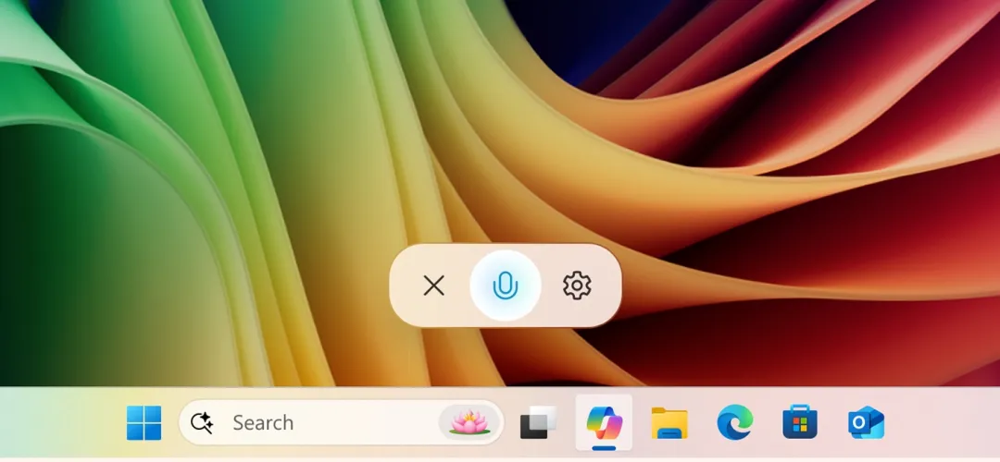

Microsoft starts testing ‘Hey, Copilot!’ in Windows
.webp)
Microsoft is testing a feature for Copilot Voice that will let Windows 11 users start a conversation with the app by saying “Hey Copilot!” Windows Insiders who have the updated app can try it out once they opt in and activate the feature. Similar commands have been available for years with Siri, Google, Alexa, and even Microsoft’s now-departed Cortana assistant that Copilot has replaced. But it is a new addition for Copilot, if a dedicated key or combination of keys wasn’t making it easy enough to get into the app, and arrives following the launch of a more conversational Copilot Voice experience. Related
Similar commands have been available for years with Siri, Google, Alexa, and even Microsoft’s now-departed Cortana assistant that Copilot has replaced. But it is a new addition for Copilot, if a dedicated key or combination of keys wasn’t making it easy enough to get into the app, and arrives following the launch of a more conversational Copilot Voice experience.
According to a blog post, you’ll need to enable the feature for it to be able to respond to the wake word. Also, the update isn’t available to all Insiders right away, but it is rolling out to testers worldwide who have English set as their display language. To find out if you have it, check your Copilot app version to see if it’s 1.25051.10.0 or higher.
Once it’s activated, you’ll see the Copilot microphone floating UI on the bottom of your screen and get a chime notification that shows it’s listening in.
Similar commands have been available for years with Siri, Google, Alexa, and even Microsoft’s now-departed Cortana assistant that Copilot has replaced. But it is a new addition for Copilot, if a dedicated key or combination of keys wasn’t making it easy enough to get into the app, and arrives following the launch of a more conversational Copilot Voice experience.